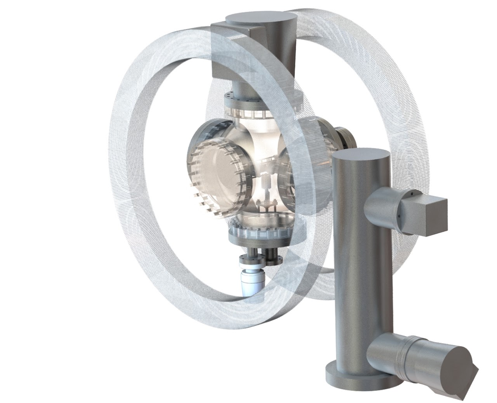
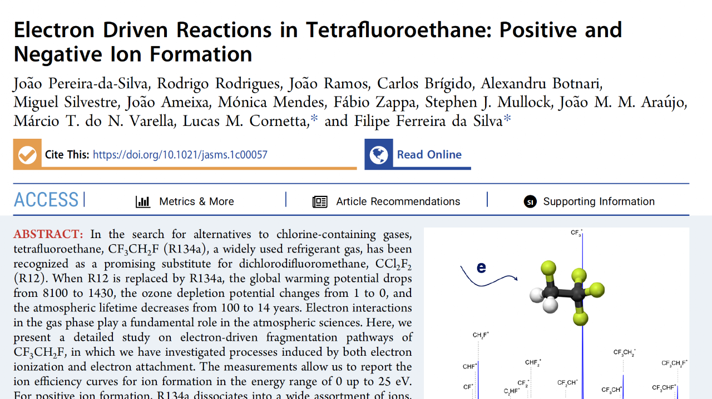

Experimental Set-Up
The trochoidal electron monochromator (TEM) was projected and designed to be implemented with a reflectron Time of Flight mass spectrometer. The use of ToF reflectron as a mass spectrometer led to adapt the reported and traditional TEM described by Shultz and Stomatovitch [2]. TEM consists in a set of electrostatic lenses supplied by stable and precise power supplies. The TEM lenses are custom-made, laser cut in molybdenum in order to prevent magnetisation, reaching a better resolution. A ToF reflectron mass spectrometer will be installed in order to mass-energy analyse the formed fragments, achieving ~3000 mass resolution allowing separation of isobaric fragments. A 6-port vacuum chamber is assembled together with a pair of Helmholtz Coils. The base pressure is guaranteed by a turbomolecular pump (400 l/s) from Varian. The inlet system allows to study gas, liquid or solid molecular targets. The existence of an internal oven allows to sublime solid molecular samples. The major advantage of using a ToF mass spectrometer with pulsed extraction is to have the information of energy released as well as to have the formation of all ions at the same time. The energy profiles for each fragment can be obtained all in one. The high mass resolution of the proposed ToF allows to distinguish between isobaric fragments, hence we can better and precisely describe fragmentation mechanisms upon electron interactions.

Further Reading
Detailed experimental set-up description can be found in:
